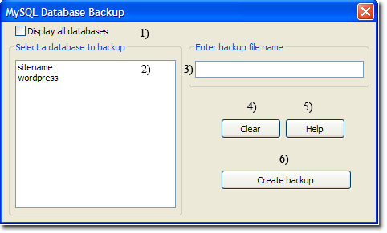
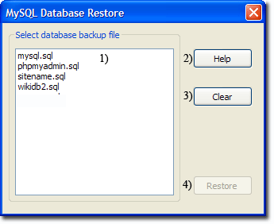

|
|
MySQL Database Backup / Restore |
The Uniform Server's database backup allows for manual backup and restoring a selected database.
Database backup
The Uniform Server's database backup provides a quick and convenient method to backup a single database. Depending on the database size, this may take a considerable length of time to complete.
From UniController, select backup database menu as follows:
MySQL > Database backup
|
Select and create database backup
Notes:
|
 |
Note 1: The database backup is created in folder: UniServerZ\db_backup_restore
Note 2: The Uniform Server's database backup effectively runs the following Server Console command:
mysqldump --user=root --password=root --host=127.0.0.1 --databases db_name > output_file.sql
Database restore
The Uniform Server's database restore provides a quick and convenient method to restore a single database. Depending on the database size, this may take a considerable length of time to complete.
From UniController, select restore database menu as follows:
MySQL > Database restore
|
Restore database
Notes:
|
 |
Note 1: The menu option allows you to restore a database from a backup file. The backup files are located in folder UniServerZ\db_backup_restore. They either already exist in the folder after you create a database backup or you can copy a file to this folder for restoring.
Note 2: The Uniform Server's database restore effectively runs the following Server Console command:
mysql --no-defaults --host=127.0.0.1 --port=3306 --user=root --password=root --execute="source restore_file.sql"